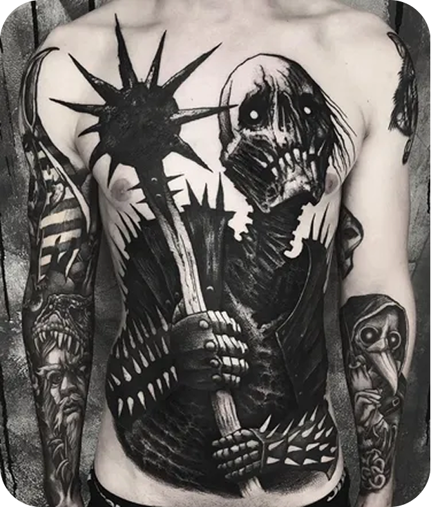

BLACKWORK
O mais dark dos estilos de tatu, o Blackwork é puro preto e impacto. Usando apenas tinta preta, ele cria contrastes marcantes com designs que vão do tribal ao geométrico, do ornamental ao blackout (cobertura total). Ideal para quem quer um visual ousado e atemporal, com linhas precisas e sombras intensas. Dura muito tempo... e é certeza de deixar aquele impacto que você merece 🖤
Sub-estilos:
Clique aqui para achar o tatuador de Blackwork mais perto de você!

